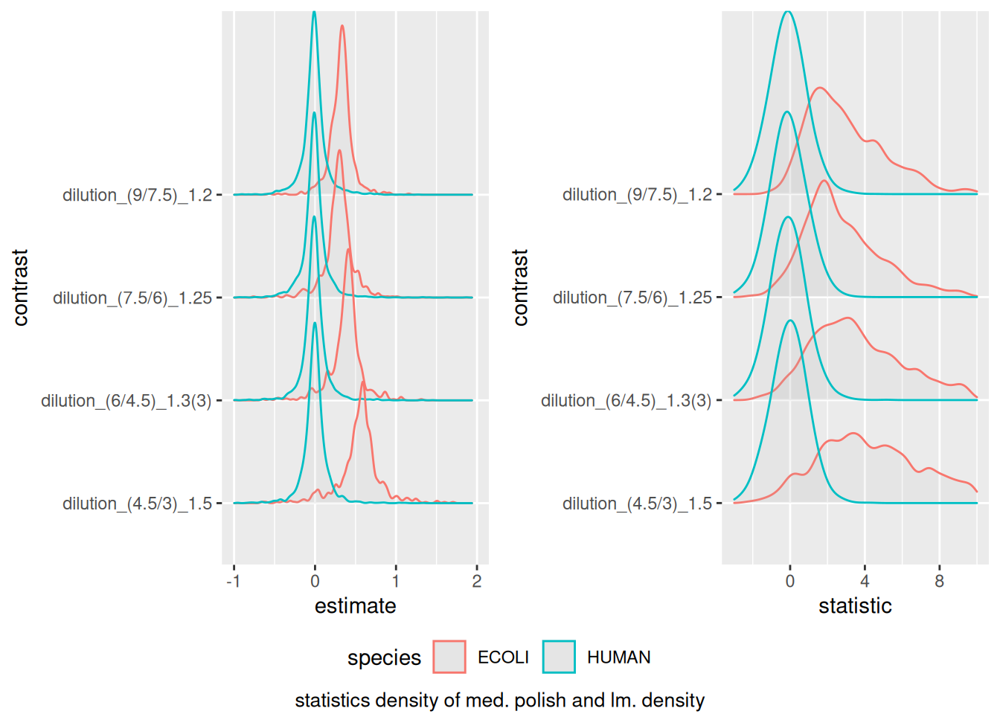
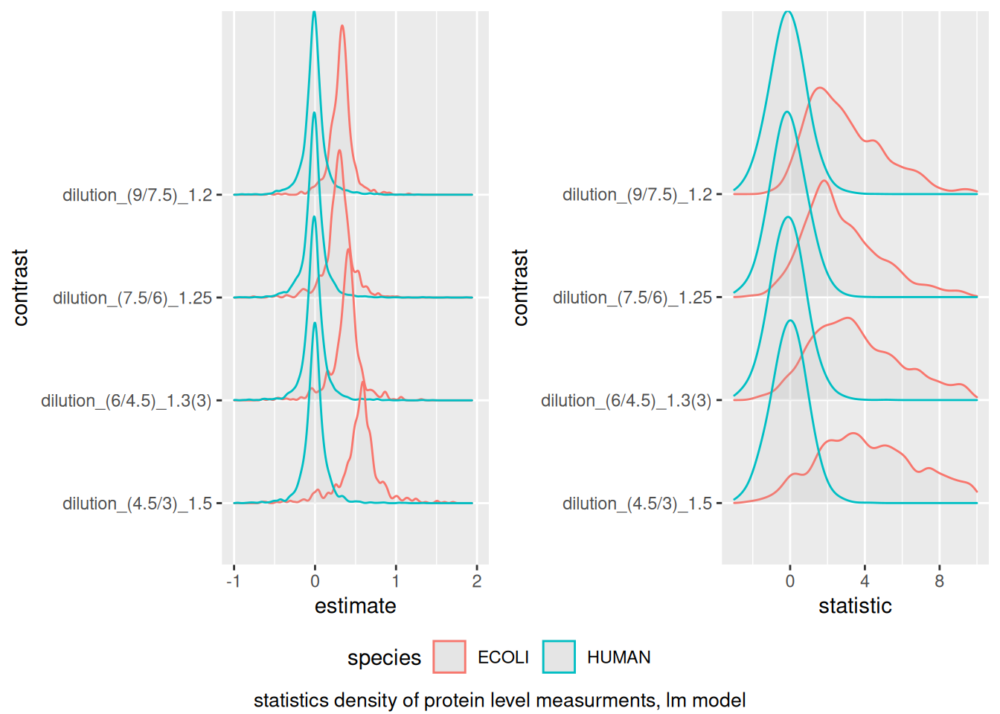
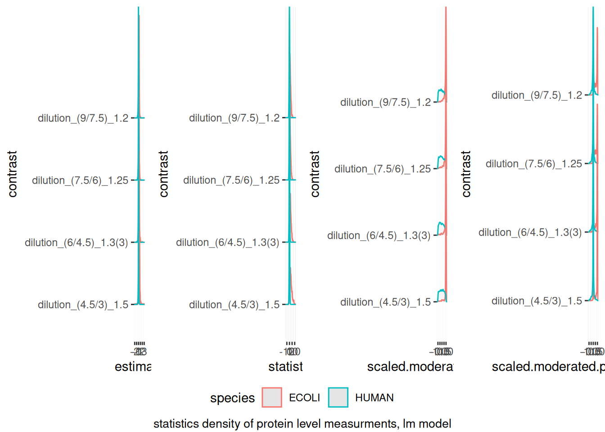
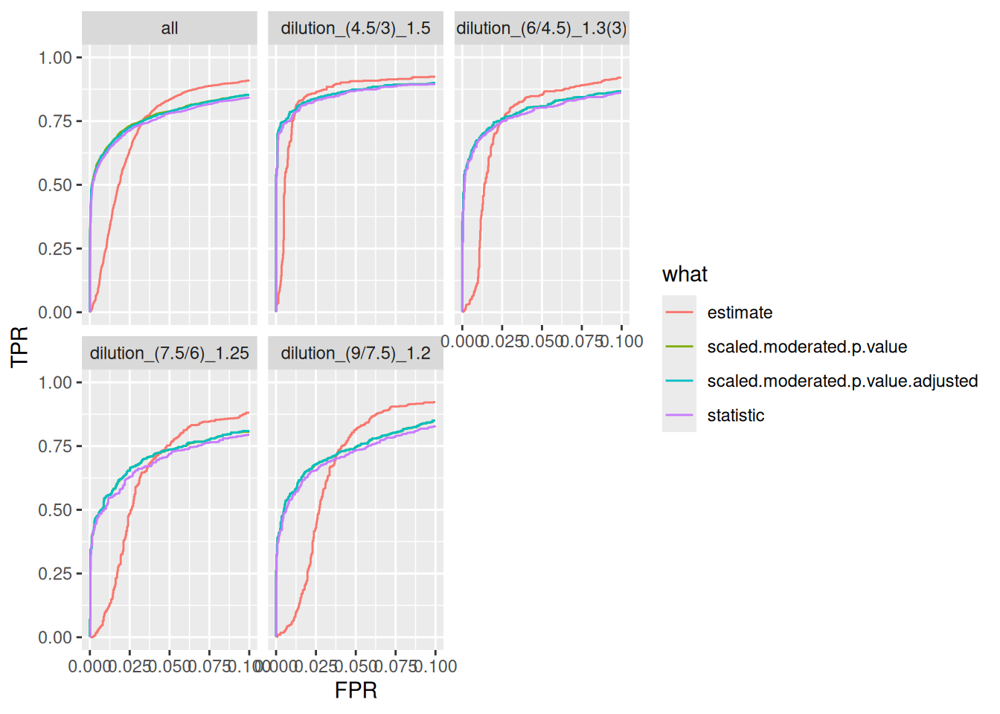
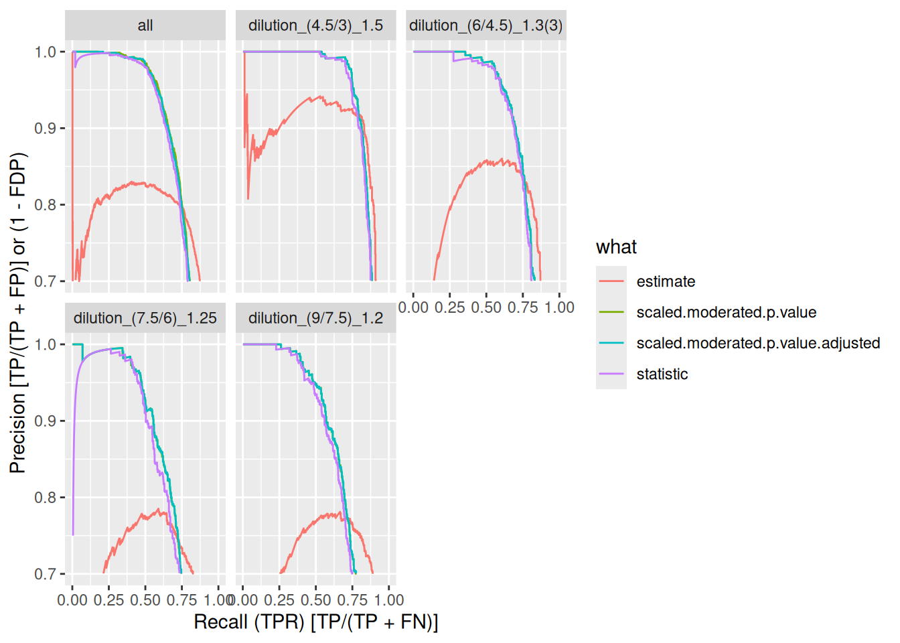
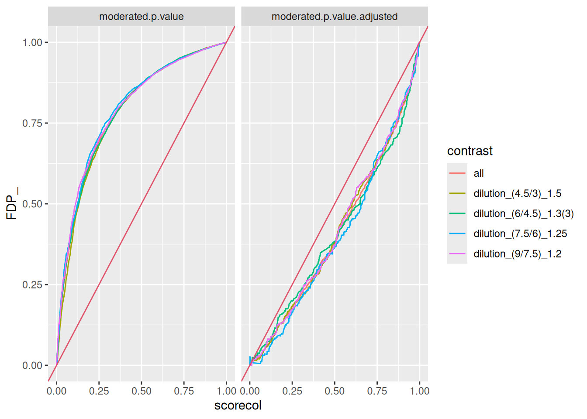
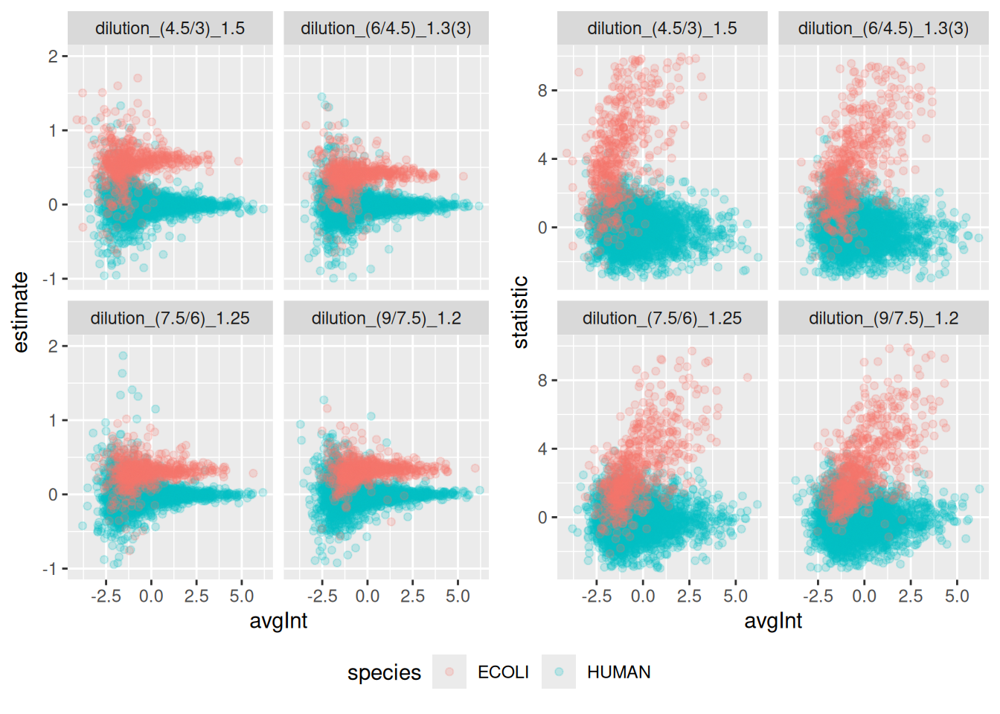

library("prolfquabenchmark")
dd <- prolfqua::prolfqua_data('data_benchmarkExample', package = 'prolfquabenchmark')
dd <- dplyr::filter(dd, !is.na(statistic))
dd <- dd |> dplyr::mutate(avgInt = (c1 + c2)/2)
ttd <- ionstar_bench_preprocess(dd)
medpol_benchmark <- make_benchmark(ttd$data,
benchmark = list(
list(score = "estimate", desc = TRUE),
list(score = "statistic", desc = TRUE),
list(score = "scaled.p.value", desc = TRUE)
),
fcestimate = "estimate",
model_description = "med. polish and lm. density",
model_name = "prot_med_lm"
)
medpol_benchmark$plot_score_distribution(list(list(score = "estimate", xlim = c(-1,2) ),
list(score = "statistic", xlim = c(-3,10) )))
medpol_benchmark$get_confusion_benchmark()# A tibble: 97,398 × 19
protein_Id scorecol TP what F_ T_ R FDP TP_hits FN_hits
<chr> <dbl> <lgl> <chr> <int> <int> <int> <dbl> <int> <int>
1 sp|P0AB61|YCIN_… 2.94 TRUE esti… 13840 2393 1 0 1 2392
2 sp|P13024|FDHE_… 2.30 TRUE esti… 13840 2393 2 0 2 2391
3 sp|P0ADG4|SUHB_… 2.10 TRUE esti… 13840 2393 3 0 3 2390
4 sp|Q15714|T22D1… 1.87 FALSE esti… 13840 2393 4 0.25 3 2390
5 sp|P16456|SELD_… 1.70 TRUE esti… 13840 2393 5 0.2 4 2389
6 sp|Q9UBP9|GULP1… 1.63 FALSE esti… 13840 2393 6 0.333 4 2389
7 sp|P76116|YNCE_… 1.60 TRUE esti… 13840 2393 7 0.286 5 2388
8 sp|P42641|OBG_E… 1.51 TRUE esti… 13840 2393 8 0.25 6 2387
9 sp|P32157|YIIM_… 1.50 TRUE esti… 13840 2393 9 0.222 7 2386
10 sp|O94763|RMP_H… 1.45 FALSE esti… 13840 2393 10 0.3 7 2386
# ℹ 97,388 more rows
# ℹ 9 more variables: FP_hits <int>, TN_hits <int>, PREC <dbl>, FPR <dbl>,
# TPR <dbl>, ACC <dbl>, FDP_ <dbl>, model_name <chr>, contrast <chr>benchmark <- make_benchmark(
ttd$data,
toscale = c("moderated.p.value", "moderated.p.value.adjusted"),
fcestimate = "estimate",
benchmark = list(list(score = "estimate", desc = TRUE),
list(score = "statistic", desc = TRUE),
list(score = "scaled.moderated.p.value", desc = TRUE),
list(score = "scaled.moderated.p.value.adjusted", desc = TRUE)
),
FDRvsFDP =
list(list(score = "moderated.p.value", desc = FALSE),
list(score = "moderated.p.value.adjusted", desc = FALSE)),
model_description = "protein level measurments, lm model",
model_name = "prot_lm"
)
bb <- benchmark$pAUC_summaries()
benchmark$complete(FALSE)
benchmark$smc$summary# A tibble: 4 × 2
nr_missing protein_Id
<int> <int>
1 0 4024
2 1 8
3 2 51
4 3 11
benchmark$plot_score_distribution()
bb <- benchmark$get_confusion_FDRvsFDP()
xb <- dplyr::filter(bb, contrast == "dilution_(4.5/3)_1.5")
bb <- benchmark$get_confusion_benchmark()
benchmark$plot_ROC(xlim = 0.1)
benchmark$plot_precision_recall()
benchmark$plot_FDRvsFDP()

benchmark$complete(FALSE)
benchmark$missing_contrasts()$summary
# A tibble: 4 × 2
nr_missing protein_Id
<int> <int>
1 0 4024
2 1 8
3 2 51
4 3 11
$nr_na
# A tibble: 4,094 × 3
protein_Id n nr_na
<chr> <int> <int>
1 sp|A0A0U1RRL7|MMPOS_HUMAN~123~A0A0U1RRL7 4 2
2 sp|A0AVT1|UBA6_HUMAN~124~A0AVT1 4 0
3 sp|A0FGR8|ESYT2_HUMAN~125~A0FGR8 4 0
4 sp|A0MZ66|SHOT1_HUMAN~126~A0MZ66 4 0
5 sp|A1L0T0|ILVBL_HUMAN~127~A1L0T0 4 0
6 sp|A1X283|SPD2B_HUMAN~128~A1X283 4 0
7 sp|A2RRP1|NBAS_HUMAN~129~A2RRP1 4 0
8 sp|A3KN83|SBNO1_HUMAN~130~A3KN83 4 0
9 sp|A4D1E9|GTPBA_HUMAN~131~A4D1E9 4 0
10 sp|A5PLL7|TM189_HUMAN~132~A5PLL7 4 0
# ℹ 4,084 more rowsstopifnot(nrow(benchmark$pAUC_summaries()$ftable$content) == 4 * (4 + 1))
benchmark$complete(TRUE)
stopifnot(nrow(benchmark$pAUC_summaries()$ftable$content) == 4 * (4+1))
missum <- benchmark$missing_contrasts()$summary
stopifnot(nrow(missum) == 4)
stopifnot(ncol(missum) == 2)
# returns number of statistics
stopifnot(nrow(benchmark$n_confusion_benchmark()) == 4 * (4 + 1))
stopifnot(nrow(benchmark$n_confusion_FDRvsFDP()) == 2 * (4 + 1))
benchmark$pAUC()# A tibble: 20 × 9
# Groups: contrast [5]
contrast what AUC pAUC_10 pAUC_20 AP pAP_50 pAP_80 Name
<chr> <chr> <dbl> <dbl> <dbl> <dbl> <dbl> <dbl> <chr>
1 all esti… 94.3 72.8 83.1 75.6 79.8 80.4 prot…
2 all scal… 94.6 77.9 83.8 86.5 99.5 96.2 prot…
3 all scal… 94.6 77.7 83.6 86.3 99.5 96.1 prot…
4 all stat… 94.4 76.6 82.7 85.5 99.2 95.4 prot…
5 dilution_(4.5/3)_1.5 esti… 94.6 84.4 88.7 86.0 90.9 91.9 prot…
6 dilution_(4.5/3)_1.5 scal… 94.8 85.4 88.2 90.3 99.3 99.1 prot…
7 dilution_(4.5/3)_1.5 scal… 94.8 85.4 88.2 90.3 99.3 99.1 prot…
8 dilution_(4.5/3)_1.5 stat… 94.7 84.6 87.7 89.8 99.3 98.8 prot…
9 dilution_(6/4.5)_1.3(3) esti… 93.7 74.8 83.9 75.1 76.7 80.1 prot…
10 dilution_(6/4.5)_1.3(3) scal… 94.2 78.7 84.1 86.6 99.1 96.6 prot…
11 dilution_(6/4.5)_1.3(3) scal… 94.2 78.7 84.1 86.6 99.1 96.6 prot…
12 dilution_(6/4.5)_1.3(3) stat… 94.0 77.6 83.3 85.9 98.8 96.0 prot…
13 dilution_(7.5/6)_1.25 esti… 93.6 64.4 78.6 66.8 66.6 70.3 prot…
14 dilution_(7.5/6)_1.25 scal… 93.9 72.4 79.9 82.7 98.0 92.5 prot…
15 dilution_(7.5/6)_1.25 scal… 94.0 72.5 80.0 82.8 98.0 92.6 prot…
16 dilution_(7.5/6)_1.25 stat… 93.6 70.4 78.4 80.9 96.8 90.7 prot…
17 dilution_(9/7.5)_1.2 esti… 95.1 66.5 81.1 67.9 64.9 69.5 prot…
18 dilution_(9/7.5)_1.2 scal… 95.5 75.0 83.1 85.3 98.5 94.0 prot…
19 dilution_(9/7.5)_1.2 scal… 95.5 75.1 83.2 85.3 98.5 94.0 prot…
20 dilution_(9/7.5)_1.2 stat… 95.2 73.3 81.8 84.2 98.3 93.1 prot…